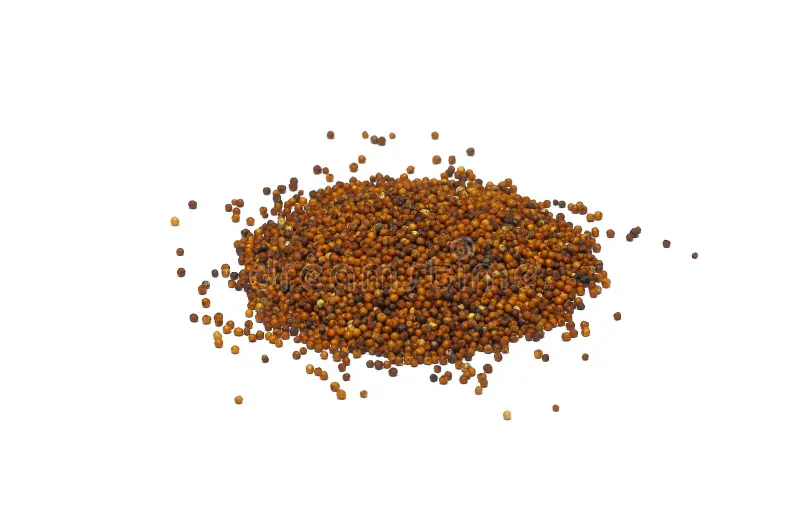

1. Seasons for Growing Ragi

Ragi is a hardy crop that grows well in arid and semi-arid regions. It can be cultivated in the following seasons:
- Monsoon: Ideal for planting in rainfed regions, with sowing beginning at the onset of rains.
- Post-Monsoon: In areas with residual moisture after monsoon, ragi can be planted for a post-monsoon harvest.
- Winter: In cooler climates, ragi can be grown during winter months under irrigation.